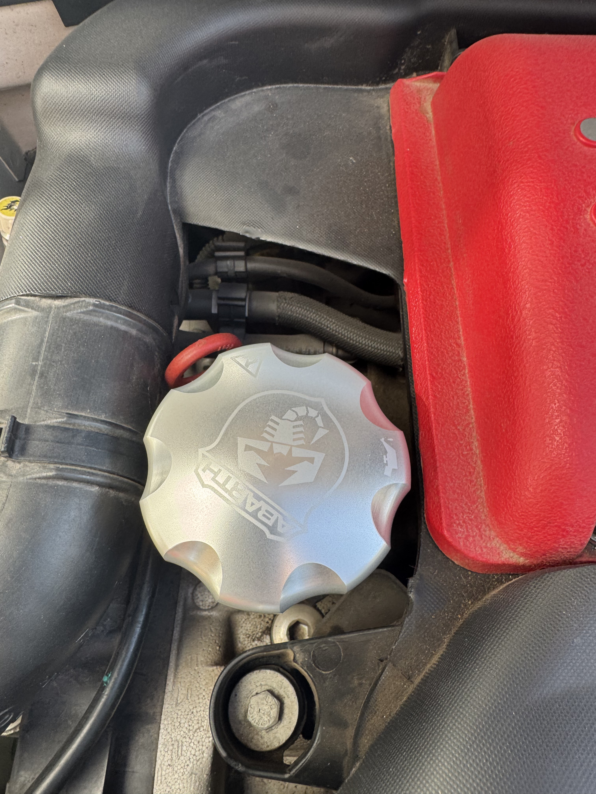
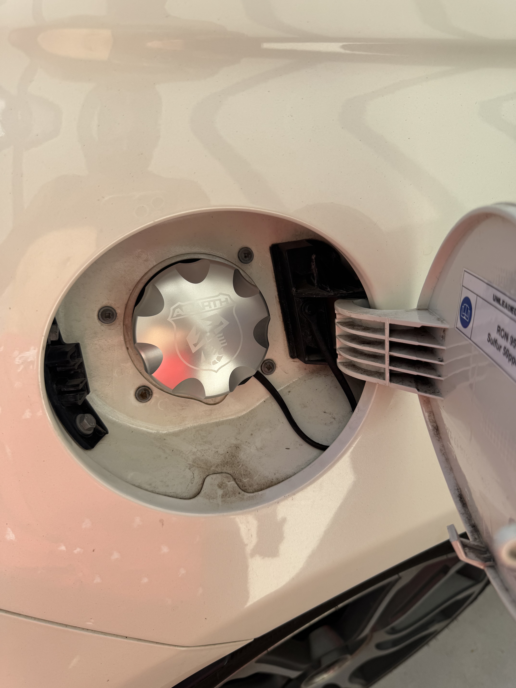
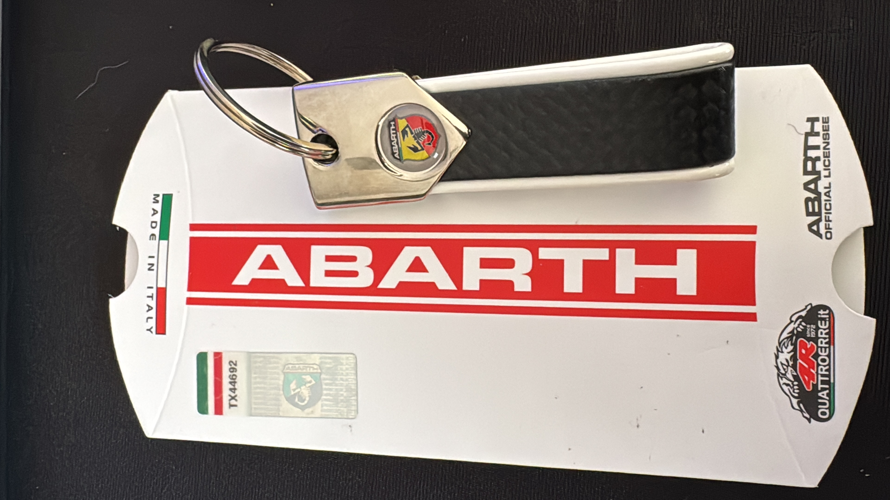
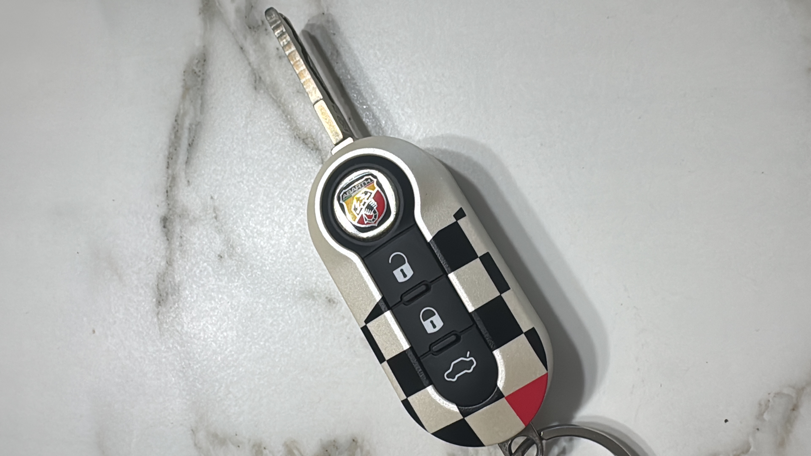
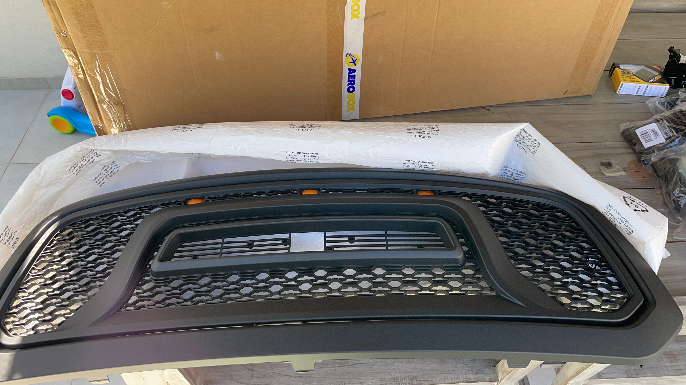
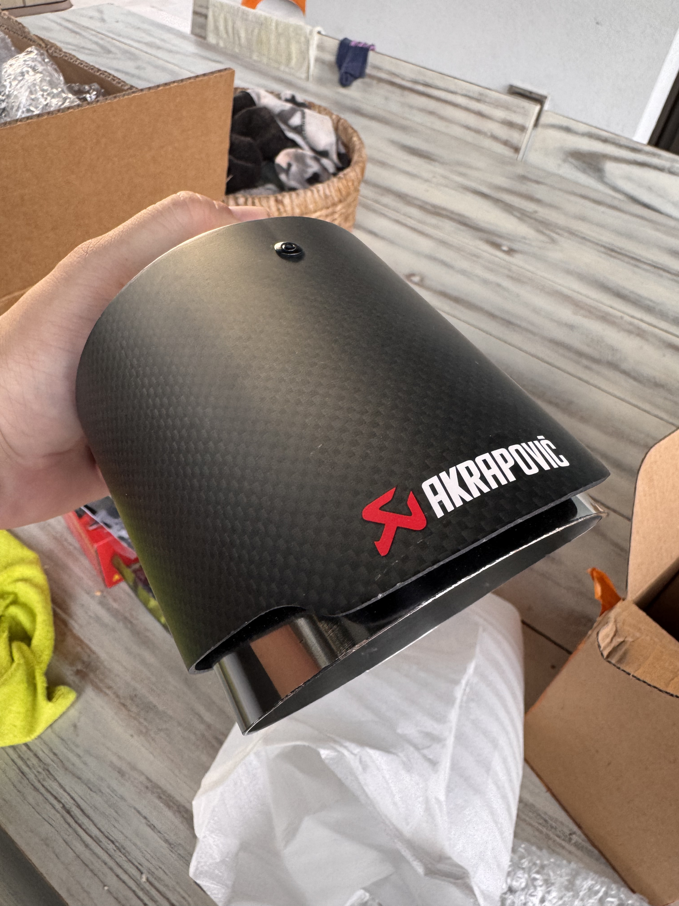
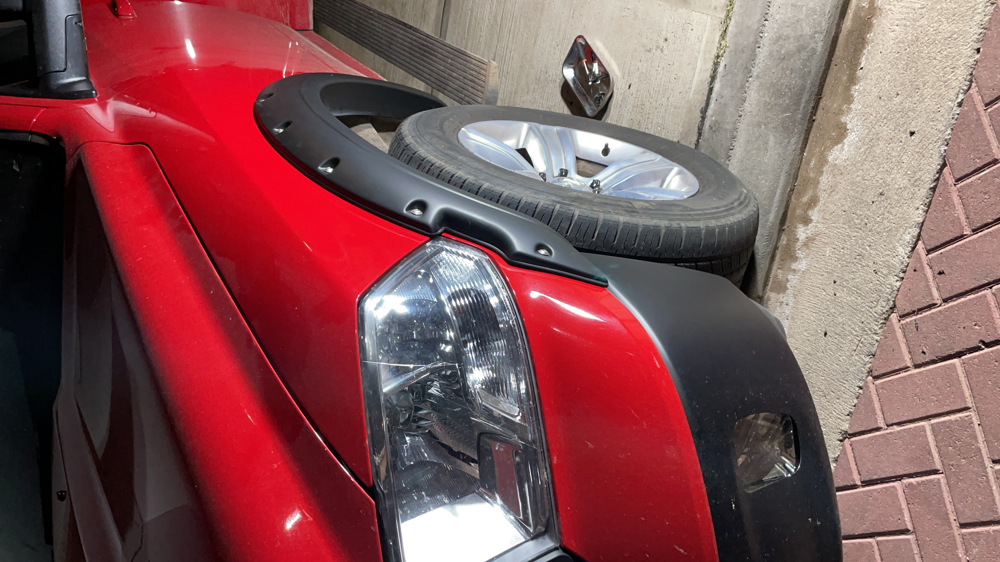

Nuestros Proyectos
FIAT 595 ABARTH






procraftparts
El estilo Abarth, llevado un paso más allá.
A este Fiat 595 Abarth le sumamos:
- ✅ Upgrade de Inlet FORGE
- ✅ Luces de giro traseras LED
- ✅ Luces LED de pariente y de baul sin error
- ✅ Upgrade de Xenon OSRAM 8k
- ✅ Antena Corta Stubby
- ✅ Giros laterales LED dinámicos
- ✅ Badges 595 y Turismo negras
- ✅ Centro de llantas negros
- ✅ Separadores de llanta 12mm adelante y 15mm atrás
- ✅ Juego de bulones cromados nuevos
- ✅ Tapa de Nafta, Aceite y Agua Abarth de Aluminio
- ✅ Tirador Sabelt en portón trasero
- ✅ Apple carplay inalambrico
- ✅ Aplique faros traseros en carbono
- ✅ Servicio de mantenimiento con filtros originales
- ✅ Reemplazo de sonda lambda original Abarth
- ✅ Reemplazo de conector de 12v original
RAM 1500




procraftparts
Potencia y estilo americano
A esta Ram 1500 le sumamos:
- ✅ Instalación de escape Akrapovic
- ✅ Instalación de parrilla
- ✅ Personalización en negro mate de las letras RAM
- ✅ Instalación de ópticas traseras
- ✅ Instalación de fenders